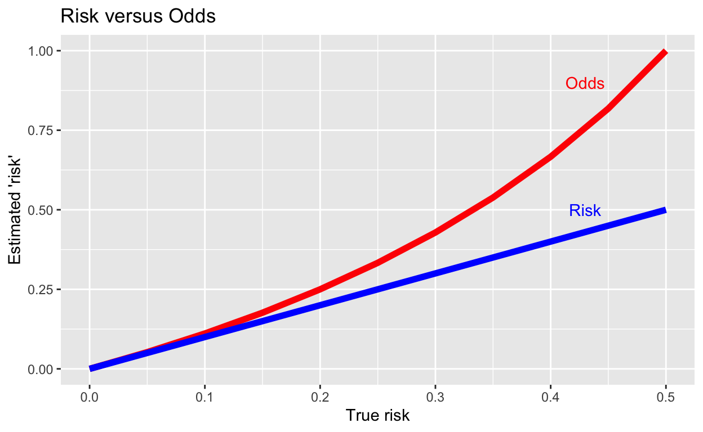

Introduction
© Copyright 2021 UNSW Sydney. All rights reserved except where otherwise stated.
This chapter is based on parts of Chapters 2, 3 and 5 of the second set text for the HDAT9600 course: Julian J. Faraway. Extending the Linear Model with R. 2nd Edition. CRC Press. This text is referred to as Faraway ELMwR in these notes. Although you are encouraged to use this text for additional readings, this is not essential — these notes have abstracted all the salient points from this text for the material covered by this course.
In this chapter we will first consider models for binomial rather than just binary responses. Finally, we’ll look at some GLMs suitable for count data.
Binomial regression models
So far we have considered the situation in which there is a binary outcome for each independent case (observation) in our data. In these cases, each outcome is a Bernoulli random variable. However, quite often, we find that we have multiple observations which share exactly the same set of predictor values — these groups are called covariate classes — and in each covariate class there will be some number of outcomes with value 0 and some number of outcomes with value 1. These outcomes will follow a binomial distribution. Several explanations of the difference between the Bernoulli and binomial distributions can be found on StackExchange.
If we assume that the outcome variable \(Y_i\) for \(i = 1, \ldots, n\) is binomially distributed \(B(m_i, p_i)\) such that:
\[ P(Y_i = y_i) = \Bigg( \begin{align} & m_i \\ & y_i \end{align} \Bigg) p_i^{y_i} ( 1 - p_i)^{m_i - y_i} \]
The individual outcomes or trials that make up \(Y_i\) all have the same \(q\) predictors \((x_{i1,}, \ldots, x_{iq})\). Conventionally, one outcome is called a success and the other a failure, but there doesn’t need to be any ranking of the desirability of the outcomes — they are just alternatives. Typically data for binomial regression models is the result of a controlled experiment, in which a few predictors are held fixed at chosen values, or the data may be counts of outcomes in broad population groups about whom we have just a few predictors, such as just geographical location, age group and sex.
As in the binary case, we construct a linear predictor (exactly the same as for binary logistic regression):
\[ \eta_i = \beta_0 + \beta_1x_{i1} + \ldots + \beta_q x_{iq} \] and we use the same logistic link function \(\eta_i = \textrm{log}(\frac{p_i}{1 - p_i})\). The log-likelihood is then:
\[ l(\beta) = \sum_{i=1}^{n} \Bigg[y_i \eta_i - \textrm{log}( 1 + e_i^\eta) + \textrm{log}\Bigg( \begin{align} & m_i \\ & y_i \end{align} \Bigg) \Bigg] \]
Recall (from Chapter 5) that the log-likelihood for the binary case is:
\[ l(\beta) = \sum_{i=1}^{n} [y_i \eta_i - \textrm{log}( 1 + e_i^\eta)] \]
so the only difference is that we have multiplied the likelihood by \(\Big( \begin{align} & m_i \\ & y_i \end{align} \Big)\), that is, by \(y_i\) successes out of \(m_i\) trials (adding a log is the same as multiplying…).
Let’s work through a simple but famous example to see how analysis of binomial data differs from the binary outcome case. If you are viewing this in an internet connected browser, here is what the data refer to:
In January 1986 the NASA space shuttle Challenger exploded after launch, killing all seven astronauts on board — a subsequent investigation focussed on failure of rubber O-ring seals in the two solid propellant rocket boosters attached to the side of the main fuel tank. It was known that as the temperature fell, the rubber became less compliant and more brittle, and thus a less effective sealant. At the time of the Challenger launch, the air temperature was 31°F (-0.5°C). The question was: could the failure of the O-rings have been predicted from historical data on partial O-ring failures in 23 previous space shuttle flights. Each shuttle had two boosters each with three O-rings. Thus for each flight, the number of O-ring (partial) failures out of six was recorded.
We can plot the data:
data(orings, package="faraway")
orings_mod <- glm(cbind(damage, 6 - damage) ~ temp, family=binomial, data=orings)
library(tidyr)
damaged_individual_orings <- orings %>% uncount(weights=damage) %>% mutate(damage=1)
undamaged_individual_orings <- orings %>% uncount(weights=6-damage) %>% mutate(damage=0)
individual_orings <- bind_rows(damaged_individual_orings, undamaged_individual_orings)data(orings, package="faraway")
plot(damage/6 ~ temp, data=orings, xlim=c(25,85), ylim=c(0,1),
xlab="Temperature in degrees F", ylab="Probability of O-ring damage")We can fit a model to the data to explore how the probability of O-ring damage is related to air temperature at launch, and from that model obtain a prediction of the probability of O-ring failure at 31°F. Notice that to specify a binomial (as opposed to a binary) model, we need to supply two pieces of information in a matrix for the outcome: the number of “successes” and the number of “failures” in each trial. Here a “success” is actually an O-ring failure (hence the use of inverted commas), and a “failure” is actually the absence of an O-ring (partial) failure, and a trial is a launch of a shuttle (with six O-rings each).
orings_mod <- glm(cbind(damage, 6 - damage) ~ temp, family=binomial, data=orings)
summary(orings_mod)We can add the predicted values:
plot(damage/6 ~ temp, data=orings, xlim=c(25,85), ylim=c(0,1),
xlab="Temperature in degrees F", ylab="Probability of O-ring damage")
x <- seq(25, 85, 1)
lines(x, predict(orings_mod, type="response", newdata=data.frame(temp=x)))From this plot we can see that the probability of an O-ring failure at 31°F was extremely high. We can calculate the probability using predict() or using the parameter estimates directly:
predict(orings_mod, type="response", newdata=data.frame(temp=31))
betas <- coef(orings_mod)
ilogit(betas["(Intercept)"] + betas["temp"]*31)Inference on binomial models
We use the same likelihood methods to derive the binomial deviance:
\[ D = 2 \sum_{i=1}^{n} [y_i \textrm{log} (y_i / \widehat{y}_i) + (m_i - y_i) \textrm{log}(m_i - y_i)/ (m_i - \widehat{y}_i)] \]
where \(\widehat{y}_i\) are the fitted values from the model.
Provided that Y is truly binomial and that \(m_i\) are reasonably large, then the deviance is approximately \(\chi^2\) distributed with \(n - q - 1\) degrees of freedom. Thus, the deviance of a binomial model can be used as a test of whether the model is an adequate fit, unlike the deviance of a binary model. So for the model we fitted to the Challenger data, above, we can compute:
pchisq(deviance(orings_mod), df.residual(orings_mod), lower=FALSE)Since that p-value is definitely not significant, we can conclude that the model fits reasonably well. Remember, the deviance is not a measure of the goodness-of-fit but rather of the badness-of-fit, thus the null hypothesis is that there is no lack-of-fit. Thus by failing to reject the null hypothesis, as we did here, we are not rejecting the hypothesis that the model fits adequately.
To demonstrate this point further, consider the \(\chi^2\) test on the null (intercept only) model:
# values for null deviance and degrees of freedom from the
# model summary output above
pchisq(38.9, 22, lower=FALSE)Thus we see that the fit of a null model, with no predictors, is inadequate, and the variation in the outcome cannot be attributed to just random variation.
Note that the \(\chi^2\) distribution of the deviance is only an approximation that becomes more accurate with larger \(m_i\) (the number of trials in each covariate class). Conversely, the approximation is poor for small \(m_i\) and fails if \(m_i = 1\). Permutation or bootstrap methods are preferred in such circumstances.
As with binary logistic regression, we can also use the difference in the deviances (\(D\)) to compare two models, one of which, denoted model S, is a subset or a subspace of model L. Recall that this is called the likelihood ratio test (LRT) and the statistic \(D_s - D_L\) is asymptotically distributed as \(\chi_{l - s}^2\). So, we can also use this to test the significance of including temperature in the model by computing the difference in deviances with and without temperature in the model. Since temperature is the sole predictor, the model without temperature is the null model, so we just subtract the null deviance from the residual deviance for the model, and refer that to the \(\chi^2\) distribution with 1 degree of freedom:
pchisq(orings_mod$null.deviance - orings_mod$deviance, 1, lower=FALSE)Since the p-value is very small, we conclude that the effect of the temperature variable in the model is statistically significant. As we have noted previous, an alternative to this is the z-value, which is \(\widehat{\beta} / se(\widehat{\beta})\), as reported in the model summary output. In the O-rings model, the z-value is -4.07 with a p-value of 0.000048, which is also very small. However, the differences-in-deviances test is preferred. There are still concerns with the approximation to the \(\chi^2\) distribution with small \(m_i\) with the differences-in-deviances test, but it is generally more accurate than the single deviance test with small \(m_i\).
What if we fit a binary logistic model to binomial data?
You might be wondering what happens if we just treated these data as binary outcome data, rather than binomial outcome data? Well, let’s investigate.
First we need to convert the data into one row per O-ring. The uncount() function in recent versions of the tidyr library is a very convenient way to do this.
library(tidyr)
damaged_individual_orings <- orings %>% uncount(weights=damage) %>% mutate(damage=1)
undamaged_individual_orings <- orings %>% uncount(weights=6-damage) %>% mutate(damage=0)
individual_orings <- bind_rows(damaged_individual_orings, undamaged_individual_orings)
table(individual_orings$damage)Now re-fit the model as if it were binary data:
orings_binomial_mod <- glm(cbind(damage, 6 - damage) ~ temp, family=binomial, data=orings)
orings_binary_mod <- glm(damage ~ temp, family=binomial, data=individual_orings)
summary(orings_binomial_mod)
summary(orings_binary_mod)The only thing that is lost by treating binomial data as if it were binary is the ability to perform a goodness-of-fit (or rather, a lack-of-badness-of-fit) test using the residual deviance — note that residual and null deviances are different in the two model. The \(\beta\) estimates and their standard errors are, however, identical.
Pearson’s \(\chi^2\) statistic for binomial models
The residual deviance is one measure of how well the model fits the data for binomial models, but there are others. Recall from HDAT9200 that Pearson’s \(\chi^2\) statistic is, in general form:
\[ \chi^2 = \sum_{i = 1}^{n} \frac{(O_i - E_i)^2}{E_i} \]
where \(O_i\) is the observed count and \(E_i\) is the expected count for observation \(i\).
For a binomial response model, we count the number of “successes” where \(O_i = y_i\) and \(E_i = n_i\widehat{p}_i\), and the “failures” where \(O_i = n_i - y_i\) and \(E_i = n_i(1 - \widehat{p}_i)\), which gives us:
\[ \chi^2 = \sum_{i = 1}^{n} \frac{(y_i - n_i \widehat{p}_i)^2} {n_i\widehat{p}_i(1 - \widehat{p}_i)} \]
Pearson’s residuals are defined as:
\[ r_i^P = \frac{y_i - n_i \widehat{p}_i}{\sqrt{\textrm{var} \, \widehat{y}_i}} \]
Pearson’s \(\chi^2\) is then just \(\chi^2 = \sum_{i=1}^{n} (r_i^P)^2\) and is thus analogous to the RSS used in normal linear models. Typically Pearson’s \(\chi^2\) is numerically close in size to the deviance, and can be used in the same manner to guide model assessment and selection.
We can easily obtain the Pearson’s residuals from the model object using the residuals() function, and thus we can compute the Person’s \(\chi^2\) and its p-value like this:
(pearsons_chisq <- sum(residuals(orings_mod, type = "pearson")^2))
1 - pchisq(pearsons_chisq, nrow(orings) - 2)We see that this also returns a non-significant p-value, and thus we fail to reject the null hypothesis that there is no lack-of-fit.
Overdispersion
If the data we are analysing with a binomial model are indeed binomial in nature, then we expect that the residual deviance will be approximately \(\chi^2\) distributed. However, we sometimes observe a deviance that is quite a lot larger than would be expected if the model were correct. The problem then is to determine which aspect of the model is incorrect.
The most likely explanation is that we have the wrong structural form for the model — we have not included the correct predictor variables, or we have not transformed those predictors in the right way. But if we have checked and excluded, as far as we are able, problems with the predictors, then what else might be wrong?
Another common reason for a large deviance is the presence of several outliers. Fortunately, we have methods for detecting these, as we have seen. Insufficient data — sample sizes that are too small — can also lead to large deviance. This is also readily assessable.
Having eliminated all those possibilities, we might then begin to wonder about the random, as opposed to the structural, part of the model. Recall that a binomial distribution for \(Y\) arises when the probability of success, \(p\), is independent and identical for each trial within a group (that is, within a covariate class).
If the group size is \(m\), then \(\textrm{var} \,Y = mp(1 - p)\) if the binomial assumptions are correct. If they are not correct, then the variance may be greater — a condition known as overdispersion (underdispersion is possible but rarely occurs).
Overdispersion can arise in two main ways: the independent assumption may be violated, or the identical assumption may be violated (or both).
The simplest method for dealing with overdispersion is to introduce an additional dispersion parameter, so that \(\textrm{var} \,Y = \sigma^2 mp(1 - p)\). In the standard binomial case, \(\sigma^2 = 1\). But we can allow \(\sigma^2\) to vary and estimate it using the data:
\[ \widehat{\sigma}^2 = \frac{X^2}{n - p} \]
where \(X^2\) is Pearson’s \(\chi^2\).
Note that the estimates for the \(\beta\) parameters are not affected by the overdispersion parameter, but the standard errors of the \(\beta\) estimates are affected.
Let’s estimate the dispersion parameter for the O-rings data.
(sigmasq <- sum(residuals(orings_mod, type = "pearson")^2) / (23 - 2))We can see that it is slightly greater than 1, indicating slight overdispersion. We can now use this estimate of the overdispersion parameter to adjust the inference on the predictors. Compare the two outputs below.
sigmasq <- sum(residuals(orings_mod, type = "pearson")^2) / (23 - 2)
print(drop1(orings_mod, scale=sigmasq, test="F"))
print(drop1(orings_mod, test="Chi"))Notice that although the temp predictor remains highly significant, the p-value is reduced somewhat due to the scale factor correcting for the slight overdispersion.
The dispersion factor can also be supplied to the summary() function. Again, compare the two outputs below:
sigmasq <- sum(residuals(orings_mod, type = "pearson")^2) / (23 - 2)
summary(orings_mod, dispersion=sigmasq)
summary(orings_mod)Note that the use of a dispersion factor to correct for overdispersion is only valid when the numbers in each group (each covariate class) are roughly equal. If not, better methods can be found in the dispmod package.
Quasi-binomial models
There is another way of dealing with overdispersion, and that is the use of quasi-binomial models that explicitly allow for extra-binomial variation. Section 3.5 in Faraway ELMwR provides a brief introduction to these models.
Count data
When the outcome is an unbounded count \((0,1,2,3, \ldots)\), we can use a count regression model to explain this in terms of the given predictors. When the count is bounded, a binomial-type response regression as discussed above can be used. In some cases, the counts might be sufficiently large that a normal approximation is justified so that a normal linear model may be used. We will briefly examine how we can model distributions for counts using the Poisson distribution.
Just to review what you learnt about the Poisson distribution in the HDAT9200 course, if \(Y\) has a Poisson distribution with a mean \(\mu > 0\) then:
\[ P(Y = y) = \frac{e^{-\mu} \mu^y}{y!} \qquad \textrm{for} \quad y = 0, 1, 2, \ldots \]
The expectation (mean) and variance of a Poisson variate are the same: \(E(Y) = \textrm{var} \ Y = \mu\).
The sum of Poisson random variables is also Poisson. Specifically, suppose that \(Y_i \sim \textrm{Pois}(\mu_i)\) for \(i = 1, 2, \ldots\) and are independent, then \(\sum_{i}^{} \textrm{Y}_i \sim \textrm{Pois}(\sum_{i} \mu_i)\). This is handy because sometimes we have access only to aggregated data. If we assume the individual-level data is Poisson, then so is the summed data and Poisson regression can still be applied.
Here are three examples of the Poisson density function:
data(gala, package="faraway")
#data(!, package="faraway")
gala <- gala[, -2]
modl <- lm(Species ~ ., data=gala)
modt <- lm(sqrt(Species) ~ ., data=gala)par(mfrow=c(1,3))
barplot(dpois(0:5, 0.5), xlab="y", ylab="Probability", names=0:5, main=expression(paste(mu,"=0.5")))
barplot(dpois(0:10, 2), xlab="y", ylab="Probability", names=0:10, main=expression(paste(mu, "=2")))
barplot(dpois(0:15, 5), xlab="y", ylab="Probability", names=0:15, main=expression(paste(mu,"=5")))
par(mfrow=c(1,1))Poisson distributions occur naturally in several situations:
- If the count is some number out of some possible total, then the outcome would usually be treated as a binomial. However, for small success probabilities and large totals, the Poisson distribution is a very good approximation and can be used — for example, modelling the counts of rare disease incidence in an entire population.
If \(\mu = np\) while \(n \longrightarrow \infty\), then \(B(n, p)\) is nicely approximated by \(\textrm{Pois}(\mu)\).
Also, for small \(p\), \(\textrm{logit} (p) \simeq \textrm{log} \, p\) so that use of the Poisson distribution with a log link function in a GLM is comparable to the binomial distribution with a logit link function. Where \(n\) varies between observations, such as for rate data for a set of different geographical areas, then a rate model should be used, as described in Faraway ELMwR Section 5.3.
If the probability of an event occurring in a given time period is proportional to the length of that time interval, and independent of the occurrence of other events, the number of events in any specified time interval will be Poisson distributed. Examples include modelling the number of incoming telephone calls to a call centre or the number of people joining a queue or a waiting list. However, in the real world, the assumptions are likely to be violated, and the rate of events is likely to vary with the time of day or the month of the year. Nevertheless, the Poisson may still be a good approximation.
Poisson distributions also arise if we count the number of events in a given time period and the time between events is independent and identically and exponentially distributed. This is effectively the same as 2. above, since an exponential distribution between events will result from the assumption of constant and independent probability of occurrence of an event in an interval.
If the count is the number of events falling into some level of a given category, then a multinomial response model or categorical data analysis should be used. For example, if we have counts of how many people have type O, A, B or AB blood and are interested in how that relates to race and gender, then a straight Poisson regression model will not be appropriate. See Faraway ELMwR Chapter 7 for a discussion of how to deal with such data.
Let’s re-examine a data set with which we are quite familiar, and which contains count data as its outcome: the Galápagos island data, in which we have a count of the number of species found on each island in the Galápagos group of islands, and the count of species endemic (native) to each island.
First we fit a linear model to the data, with Species (count) as the outcome and all the other variables as predictors (the Endemic count variable has been removed from the data), and we plot the residuals vs the fitted values.
modl <- lm(Species ~ ., data=gala)
plot(modl, which=1)We’ve seen this plot for these data before, and we noted the non-constant variance. We also saw that a square root transformation of the outcome variable improved the heteroscedasticity considerably:
modt <- lm(sqrt(Species) ~ ., data=gala)
plot(modt, which=1)Let’s look at the summary for the transformed outcome model:
summary(modt)The fit is not too bad (\(R^2\) = 0.78) but it comes at the expense of a square root transformation that makes interpretation difficult. Also, some of the counts of species for some islands are less than ten, meaning that an reliance on a normal approximation for their errors is a bit of a stretch. Can we fit a Poisson model instead?
Poisson models
Suppose we have a count outcome variable \(Y_i\) that we wish to model in terms of a set of predictors \(x_i\). Since \(Y_i \sim \textrm{Pois}(\mu_i)\) then we need a way to link \(\mu_i\) to the predictors \(x_i\), using the familiar linear combination of the \(x_i\) to form the GLM linear predictor \(\eta_i = x_i^T\beta\). We need \(\mu_i \ge 0\), so we can conveniently use a log link function:
\[ \textrm{log} \, \mu_i = \eta_i = x_i^T\beta \]
The log-likelihood is:
\[ l(\beta) = \sum_{i = 1}^{n} (y_i x_i^T \beta - \textrm{exp}(x_i^T \beta) - \textrm{log}(y_i!)) \]
Canonical links
Differentiating the log-likelihood above with respect to \(\beta_j\) gives the MLE as the solution to:
\[ X^Ty = X^T\widehat{\mu} \]
The normal equations for the least squares estimate of \(\beta\) in Gaussian linear models take the same form when we set \(\widehat{\mu} = X\widehat{\beta}\). The equations for \(\beta\) for a binomial regression with a logit link also take the same form. This would not be true for other link functions. Link functions having this property are known as canonical links. So, the canonical link for a binomial regression is the logit function, and for a Poisson regression is the log function.
We can fit a Poisson regression model to the gala data like this:
modp <- glm(Species ~ ., family=poisson, data=gala)
summary(modp)The deviance for the Poisson model, also known as the G-statistic, is given by:
\[ D = 2 \sum_{i=1}^{n} (y_i \textrm{log}(y_i / \widehat{\mu}_i) - (y_i - \widehat{\mu}_i)) \]
We can use the same z-value asymptotic inference as for a binary and binomial model, and we can judge the goodness-of-fit (or lack of badness-of-fit) by referring the deviance to a \(\chi^2\) distribution with degrees of freedom equal to that of the model (that is, equal to the number of parameters in the model, including the intercept).
Similarly, we can compare nested or subspace models by taking the difference in deviances and comparing that to a \(\chi^2\) distribution with degrees of freedom equal to the difference in the number of parameters in each model. The statistical significance of parameter estimates can be assessed using \(\widehat{\beta_i} / se(\widehat{\beta_i})\), but it is better to use profile likelihood methods if possible.
Overdispersion in Poisson models
Poisson models are also prone to problems with overdispersion. See Section 5.2 of Faraway ELMwR for a discussion of this.
Modelling common outcomes
We have already learnt about the logistic regression model for modelling binary outcomes. The logistic model is appealing because the exponentiated coefficients provide an estimate of the odds ratio. However, the risk and not the odds is usually the estimate of interest for biostatisticians and epidemiologists. Although the odds gives a good approximation for the risk for rare outcomes (<10%), generally the odds over-estimates the risk. We can see this in the figure below.

- For outcomes where the true underlying risk is less than 0.1, the risk and the odds are very close.
- As the underlying risk increases, the odds overestimates the risk
Because the odds over-estimates the true risk for common outcomes, the odds ratio over-estimates the risk ratio, especially if one subgroup is common. Consider two groups, A and B, where the probability of an outcome is 15% in Group A and 45% in group B: \[ P(Y|A = 0.15) \] \[ P(Y|B = 0.45) \]
Without giving it too much thought, we know that the risk is three times higher in group B compared to group A, but how does the odds ratio reflect this intuition?
Use the code box below to calculate the odds ratio for the outcome in Group B relative to Group A. You should see that the estimated odds ratio over-estimates the risk ratio.
Recall that
\[ \text{Odds Ratio} = \frac{Odds B}{Odds A} = \frac{p_B/(1-p_B)}{p_A/(1-p_A)} \]# pr(Y|A) = 0.15
# pr(Y|B) = 0.45# pr(Y|A) = 0.15
# pr(Y|B) = 0.45
pa = 0.15
pb = 0.45
or <- (pb/(1-pb))/(pa/(1-pa))
or Trouble with the Odds Ratio
Although the odds ratio only approximates the risk for rare outcomes, it is frequently (mis)interpreted as a risk ratio in cohort studies and RCTs, even when the outcome is common. This can lead to confusion and misleading interpretations.
An example of this problem arose in a study of the effects of race and sex on physicians referrals for cardiac catheterization, published in The New England Journal of Medicine. The study found that the odds of referal among Black pateints was only 60% that of White patients. The same odds ratio was found for Female versus Male patients. These results led to the following reporting in the New York Times:
“Doctors are only 60% as likely to order cardiac catheterization for women and blacks as for men and whites”
A closer examination of the results underlying this claim reveals a very different story. Below are the raw referral rates for Men, Woman, Blacks and Whites. We can see that the rates of referral are pretty close, but slightly higher for Whites and Men (91%) compared to Blacks and Women (85%):
| Patients | % referred |
|---|---|
| White | 90.6 |
| Black | 84.7 |
| Men | 90.6 |
| Women | 84.7 |
| Note: | |
| Data from Schulman et al, NEJM 1999(340) |
Calculating the odds ratio for Women versus Men (it is the same result for Blacks versus Whites) we do indeed get an Odds Ratio of 0.6: \[
\text{Odds Ratio} = \frac{\text{Odds(Women)}}{\text{Odds(Men)}} = \frac{0.847/(1-0.847)}{0.906/(1-0.906)} = \frac{5.54}{9.64} = 0.6
\] But of course, the Risk Ratio gives a much more meaningful representation of the data:
\[
\text{Risk Ratio} = \frac{\text{Risk(Women)}}{\text{Risk(Men)}} = \frac{0.847}{0.906} = 0.93
\]
Cleary, the statement that doctors are only 60% as likely to refer woman as men greatly exaggerates the actual finding that doctors were 7% less likley to refer woman then men (a similar result for Black versus White patients).
You can read a full dissection of this study, and how the findings were reported, here.
Alternative approaches for modelling common outcomes
At least eight alternatives to logistic regression have been suggested for estimating risk ratios in trials and cohort studies. In the final sections of this chapter we will briefly review two commonly used approaches that fall into the GLM family:
Log-binomial regression
Modified Poisson regression
Log-binomial regression
The first alternative to logistic regression that we will discuss is log-binomial regression. Like logistic regression, log-binomial regression models the probability of a binary outcome. As the name suggests, a binomial distribution is assumed for the outcome variable. This means that we are assuming that the conditional distribution of the outcome \(Y\) given the predictor variables is binomial. This is combined with the log link function (as distinct from logistic regression which combines a binomial distribution with the logit link).
The log-binomial model can be written as
\[ log(P(Y=1|X)) = \beta_0 + \beta_1 x_{i1} + \ldots + \beta_q x_{iq} \] The corresponding log likelihood for this model is
\[ l(\beta) = \sum_{i=1}^{n} [y_i \textrm{log}(p_i(\beta)) + \sum_{i=1}^{n} [(1-y_i) \textrm{log}(1-p_i(\beta)) \] A key difference with log-binomial regression as compared to logistic regression is that exponentiating the estimated \(\beta\) parameters gives us a direct estimate of the risk ratio (as opposed to the odds ratio).
To illustrate alternatives to logistic regression we will use an outcome that is definitely not rare: deaths in the Game of Thrones book series. These data were originally compiled by Erin Pierce and Ben Kahle, as described here. A subset of the data is provided with this tutorial in the dataset deaths. Five variables are included:
- Name (e.g. Asha Greyjoy)
- Allegiences (e.g. Lannister)
- died (0=alive; 1=died)
- Gender (0=Female; 1=Male)
- Nobility (0=Commoner; 1=Noble)
Spoiler alert!
The deaths dataset are based on events in the first five books of the series. If you’re worried about spoilers, don’t examine the raw data!
Let’s explore the data:
head(deaths)Now let’s do a little exploratory data. Use the code box below to see what proportion of characters die overall, and by gender.
# Overall
mean(deaths$died)
# Men
mean(deaths$died[deaths$Gender==1])
# Women
mean(deaths$died[deaths$Gender==0])Before moving on, think about what a back-of-the-envelope calculation would be for the risk of death among men compared to women
Now, let’s try to fit some simple models. First lets fit a logistic model for the probability of death predicted by gender. Note that in the code below, the link function is explicitly specified as logit in the line family='binomial'(link='logit'). Usually, we don’t have to write this because logit is the default link for GLMs with a binomial distribution, but do so here for clarity.
m1 <- glm(died ~ Gender, data=deaths, family='binomial'(link='logit'))
exp(coef(m1))
exp(confint(m1))How does the estimated odds ratio for gender compare with your back-of-the-envelope calculation of risk of death in men relative to women?
Now, adapt the code above to specify the same model using a log-binomial regression:
m2 <- glm(died ~ Gender, data=deaths, family=' '(link=' '))
exp(coef( ))
exp(confint( ))m2 <- glm(died ~ Gender, data=deaths, family='binomial'(link='log'))
exp(coef(m2))
exp(confint(m2))In the exploratory data analysis you should see that 35% of men and 23% of women died. So the risk of death is about 50% higher for men compared to women. The odds ratio in the logistic regression model is \(OR=1.84\), whereas the risk ratio from the log-binomial model is \(RR=1.54\). So, the odds ratio from the logistic regression is over-estimating the relative risk of death for women compared to men, whereas the relative risk from the log-binomial model is accurate.
The log-binomial model is not a panacea. One well known issue is that if you have a complex model with many predictors, it is likely that the log-binomial model will fail to converge. The choice of link function is at the root of the non-convergence problem. The logit link maps the probability of the outcome onto the entire real line, that is \(\textrm{log}(\frac{p}{1-p})\) lies between \([-\infty,\infty]\) for values of p between 0 and 1. In contrast, the log link maps the probability of the outcome onto the negative real line, i.e. \(\textrm{log}(p)\) lies between \([-\infty,0]\) for values of p between 0 and 1. As a result, applying the log link places a bound on the parameter space for the model parameters. This is what leads to convergence problems.
Modified Poisson regression
A second alternative to logistic regression is modified Poisson regression. You have previously seen how Poisson regression can be used to model outcomes which are unbounded counts (0,1,2,3,…). When a Poisson model is applied to binomial data (0/1), the error for the estimated relative risk is over-estimated. Thus, resulting in confidence intervals that are too wide. A solution proposed by Zou (2004) is to apply robust standard errors, which have been shown by simulation to calculate appropriate standard errors and confidence intervals. The use of robust standard errors is the “modification” in modified Poisson regression.
Modified Poisson regression assumes a Poisson distribution and a log link function. As with the log-binomial model, we can write the Poisson model as
\[ \textrm{log}(P(Y=1|X)) = \beta_0 + \beta_1 x_{i1} + \ldots + \beta_q x_{iq} \] Lets apply the Poisson model to the Game of Thrones deaths data:
m3 <- glm(died ~ Gender, data=deaths, family='poisson'(link='log'))
exp(coef(m3))
exp(confint(m3))The risk ratio here is RR=1.54, the same as for the log-binomial model. But you may have noticed that the confidence intervals are wider for the estimate from the Poisson model. Lets confirm that:
m2 <- glm(died ~ Gender, data=deaths, family='binomial'(link='log'))
m3 <- glm(died ~ Gender, data=deaths, family='poisson'(link='log'))
exp(confint(m2))
exp(confint(m3))To correct the confidence intervals we can apply the robust variance using the function coeftest with the option vcov=sandwich from the sandwich package.
library("sandwich")
m3 <- glm(died ~ Gender, data=deaths, family='poisson'(link='log'))
coeftest(m3, vcov=sandwich)In the code box below, use the results from coeftest to calculate the modified 95% confidence intervals for the Risk Ratio for gender. Compare this interval to the results from the log-binomial model and the Poisson model without robust error variance.
# Lower bound
# Upper bound# Lower bound
exp(0.43412 - 1.96*0.15431)
# Upper bound
exp(0.43412 + 1.96*0.15431)